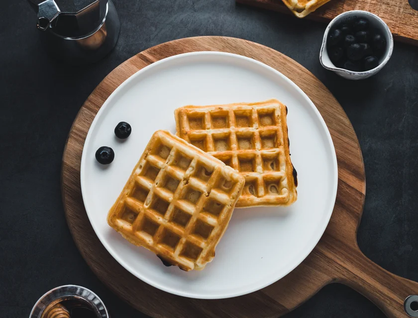

Waffles
Ingredientes
- 2 xícaras (chá) de farinha de trigo
- 2 colheres (sopa) de açúcar
- 2 colhres (chá) de fermento em pó
- 1/2 colheres (chá) de sal
- 2 colheres amido de milho
- 3 ovos batidos
- 4 colheres (sopa) de mantega sem sal
- 1 e 3/4 de xícara (chá) de leite
- 1 colher (sopa) de essência de baunilha
Modo de Preparo
- 1. Peneire em um recipiente a farinha de trigo, o açúcar, o amido, o fermento e o sal.
- 2. Em outro recipiente misture os ovos batidos com o leite, a mantega derretida e a essencia de baunilha.
- Despeja sobre a mistura de farinha rapidamente e incorpore os ingredientes.
- 4. Aqueça o aparelho para Waffles. Coloque uma concha rasa de massa e espalhe até cobrir o molde do aparelho, feche a tampa e deixe a massa assar até cobrir o molde do aparelho, feche a tampa e deixe assar até a massa ficar bem dourada
- 5. retire com estpátulas de silicone. Sirva com mel, frutas ou geleia.
Informações adicionais
Legal para comer com os amigos de manhã :D